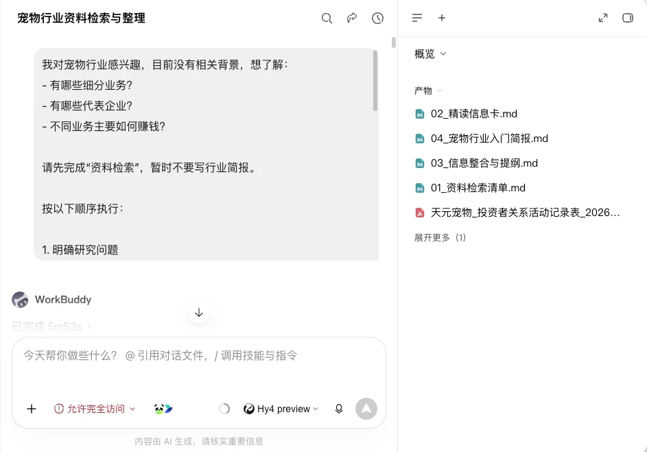
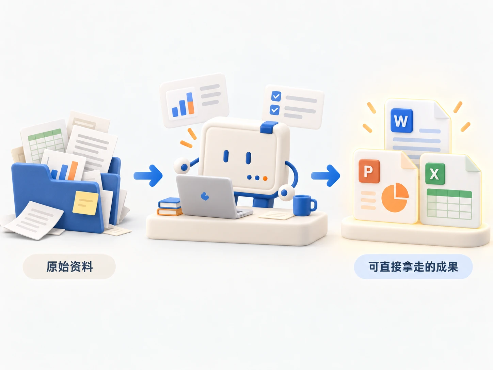
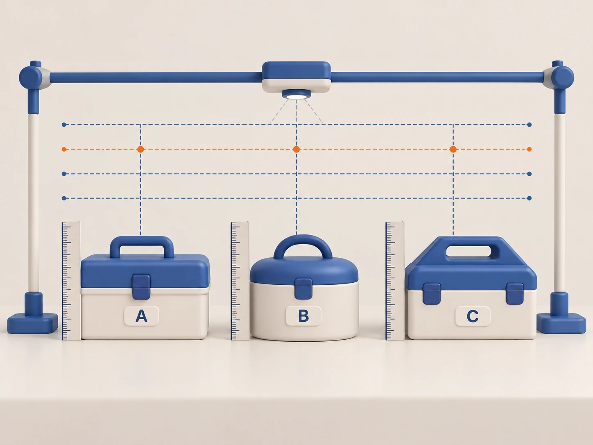

第一部分｜快速读懂陌生行业
01｜接触陌生行业
没有行业背景，也能让 AI 帮你快速建立基本认识。
一个对宠物行业完全陌生的人，向 AI 提出三个问题：行业里有哪些生意，有哪些代表企业，不同业务怎样获得收入。
AI 在一次连续任务中完成资料查找、长文阅读和信息整理，最终留下三项可以继续使用的成果：
- 资料检索清单
- 精读信息卡
- 宠物行业入门简报

02｜看懂行业全景
AI 能把庞大零碎的信息源，变成普通人一眼就能看懂的行业答案。
庞大零碎的信息源
- 行业数据：《2026年中国宠物行业白皮书》重点数据介绍，提供市场规模和消费结构。
- 企业材料：瑞普生物董事会工作报告与天元宠物投资者关系活动记录表，提供具体业务和收入信息。
- 权威报道：宠物食品企业报道与宠物医疗企业报道，补充代表企业和行业变化。
AI 围绕“有哪些业务”提取、核对并归类
2025 年，中国城镇犬猫消费市场规模为 3126 亿元。其中，食品占 53.7%，医疗占 27.6%，用品占 12.2%，服务占 6.5%。四项消费共同勾勒出宠物行业的主要业务：食品、医疗、用品和服务。
03｜看懂赚钱方式
看清钱从哪里来，才算真正摸到一个行业的门道。
- 产品销售：食品和用品通过自有品牌销售、授权品牌代理和 ODM 生产获得收入。乖宝宠物、中宠股份、佩蒂股份和天元宠物分别参与了其中部分业务。
- 服务收费：宠物服务通过向宠主提供诊疗、洗澡、美容和寄养获得收入。瑞派和新瑞鹏是资料涉及的连锁宠物医疗企业。
- 供应链分销：药苗企业通过销售疫苗和药品获得收入，分销企业连接动保品牌与宠物医院。瑞普生物和中瑞供应链分别对应这两种业务。
第二部分｜AI资料研究三步法
04｜AI资料研究三步法
AI 资料研究让一个问题沿着资料、依据和结论逐步收敛。
研究问题 → AI检索 → 找到资料
找到资料 → AI精读 → 提取依据
提取依据 → AI综合 → 形成结论
每一步的产出直接成为下一步的输入。人负责确定研究问题、判断资料是否可信，并决定哪些结论可以使用。

研究沿着同一个问题，从资料中取依据，再把依据组织成判断。
05｜AI检索
让AI规划检索
问题越清楚，AI 找到的资料越有用。
- 说明任务：告诉 AI 研究什么、范围有多大、最后需要什么成果。
- 拆分问题：让 AI 把宽泛主题拆成三至五个能够分别查找资料的问题。
- 制定方案：让 AI 判断每个问题适合查哪类资料，并生成相应的检索词。
完成的检索方案能够说清：要回答什么，去哪里找，用什么词找。
筛选资料来源
能够追溯到原文的资料，才有资格支撑结论。
- 一手资料：政府和行业机构发布的数据、企业公告与官方文档，优先用来支撑关键事实。
- 专业资料：研究机构报告、权威媒体和行业媒体的正文，用来补充背景和变化。
- 线索资料：搜索摘要、自媒体内容和无法打开的页面，只用来发现关键词和原始出处。
搜索摘要给你线索，能支撑判断的依据还要回到原文。
06｜AI精读
让AI带着问题阅读
AI 精读的价值，在于从长资料中找到与问题相关的依据。
- 定向提取：指定要回答的问题，让 AI 只提取直接相关的事实、数字和观点。
- 对话精读：对术语、数据含义和业务关系继续追问，直到能用日常语言解释清楚。
无论使用哪种方式，AI 的回答都要同时保留结论、原文位置和适用范围。资料没有回答的问题，明确记录为“未提及”。
建立精读信息卡
一张好的信息卡，只回答三件事。
每份资料建立一张信息卡。标题、发布者、日期、链接和实际阅读范围放在卡片顶部，主体保留三块内容：
- 资料说了什么：记录与研究问题直接相关的事实、数字和明确观点。
- 依据在哪里：记录原文位置，为数字补充年份、对象和统计范围。
- 资料没有说什么：标出信息空白、资料冲突和待核实内容，不用常识补全。
信息卡完成后，其他人可以沿着记录回到原文，并判断这条信息能否继续使用。
“未提及”也是研究结果，空白不需要用猜测补满。
07｜AI综合
把信息变成提纲
先让 AI 整理结论与依据，再由人决定内容怎样展开。
- 重新分类：汇总多张信息卡，按研究问题归类，合并重复内容。
- 匹配依据：建立结论与来源的对应关系，标出数字冲突和信息空白。
- 生成提纲：让 AI 提出三种组织方案，由人选择重点、调整顺序并删减弱内容。
完成后，提纲中的每个主要部分都有对应资料。
把提纲变成成果
研究成果中的关键判断，都能够回到对应资料。
- 生成正文：让 AI 使用已确认的提纲和信息卡写作，不引入新的事实。
- 保留来源：为关键数字、企业信息和事实判断标注出处，将资料事实与分析推断分开表达。资料事实是原文明确写出的内容，分析推断是 AI 根据材料得出的判断。
- 模拟审核：让 AI 检查难以读懂、缺少证据和推断过度的内容，再由人抽查关键依据并逐条修改。
成熟的研究简报应该同时做到：初学者能看懂，关键信息有来源，没查清的内容也会明确写出。
第三部分｜四种研究任务，拿来即用
08｜迁移研究方法
研究任务会变，让 AI 干活的链路不变：AI检索 → AI精读 → AI综合。
工具选型｜竞品调研｜行业入门｜专题调研
迁移时本质上只调整三个变量：
- 研究问题：最后需要回答什么。
- 优先来源：答案应该去哪里找。
- 成果形式：最终需要对比表、建议还是简报。
09｜工具选型
让 AI 结合你的真实条件，比较工具并给出选择建议。
我需要选择一款[工具类型]，主要用于[使用场景]，使用人数为[人数]，预算为[预算]，必须满足[核心需求]。
请按以下步骤完成：
- 检查需求是否完整。缺少影响选择的信息时，先向我提问。
- 检索并比较三款候选工具，优先使用官网、价格页和官方文档；比较核心功能、价格、使用限制和上手难度，注明来源与查询日期。
- 根据我的需求给出选择建议，说明推荐理由和需要接受的取舍。无法确认的信息标注“待核实”。
10｜竞品调研
让所有产品回答相同问题，比较结果才有意义。

候选对象放在同一把尺下，差异才看得清。
我想了解[产品类别]，请对[产品 A]、[产品 B]和[产品 C]开展竞品调研。
请按以下步骤完成：
- 搜集各产品的官网介绍和官方文档，记录来源。
- 制作对比表，比较目标用户、核心功能、价格和主要使用场景。公开资料没有涉及的内容标注“未提及”。
- 基于对比表总结共同点和关键差异。属于分析推断的内容单独标明，并说明判断依据。
11｜行业入门
让 AI 帮你快速看懂一个陌生行业。
我对[行业名称]感兴趣，没有相关背景，希望快速建立基本认识。
请按以下步骤完成：
- 检索近[两年]的行业报告、企业资料和权威报道，记录来源。
- 整理这个行业的主要业务、代表企业、收入方式和重要变化；关键数字注明年份与统计范围。
- 编写一份约[1500]字的行业入门简报，用普通人能够理解的语言解释必要术语，并区分资料事实与分析推断。
12｜专题调研
让 AI 围绕一个具体问题，找到可以参考的做法。
我想研究的问题是：[研究问题]。研究对象为[对象]，需要考虑[预算、时间等限制]。
请按以下步骤完成：
- 将研究问题拆成三至五个子问题。
- 围绕子问题检索相关研究和公开案例，整理主要做法、适用条件、实施投入和公开结果。没有披露的信息不做推测。
- 编写专题简报，说明哪些做法值得参考、采用这些做法需要满足什么条件，以及还有哪些问题尚未解决。
小结
- 从问题开始：先说清研究什么，再让 AI 拆解任务和规划资料。
- 用成果衔接：资料清单进入精读，信息卡进入综合，上一步的产出直接成为下一步的输入。
- 把住事实底线：让 AI 保留来源、范围和资料空白，再由人决定哪些结论可以使用。
高质量的 AI 研究，来自清楚的任务、可追溯的依据和人的最终判断。